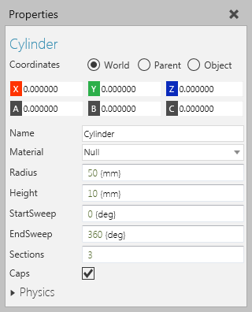
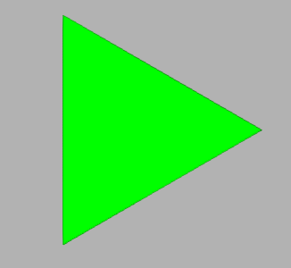

A Cylinder feature is a cylindrical shape.

Cylinders are flexible shapes that can be molded into many different objects.

| Name | Description |
| Name | Defines the name of the cylinder. |
| Visible | Turns on/off the visibility of cylinder. |
| Material | Defines the material of the cylinder. |
| Radius | Defines the radius of the cylinder. |
| Height | Defines the height of the cylinder in its Z-axis. |
| StartSweep | Defines the start angle (in degrees) for sweeping the cylinder's surface. |
| EndSweep | Defines the end angle (in degrees) for sweeping the cylinder's surface. |
| Sections | Defines the number of sections generated for the circumference of the cylinder. A low value can produce a prism. |
| Caps | Turns on/off the rendering of caps in the cylinder. |
| Physics | Defines a set of physics properties for the feature. |